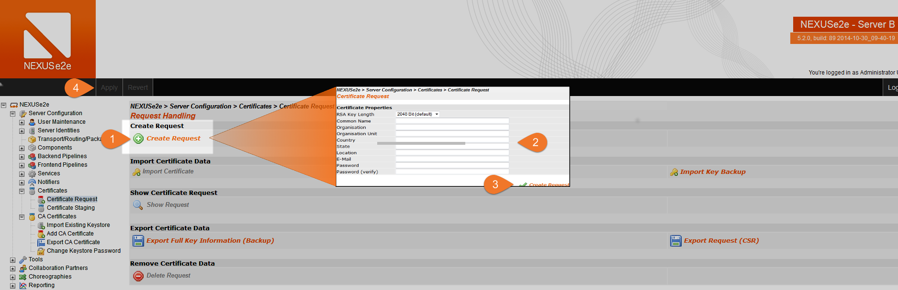
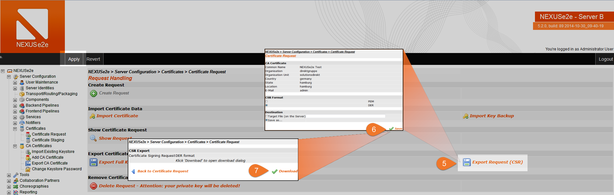
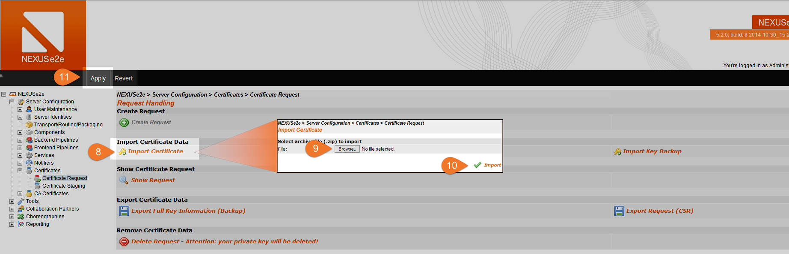

Create a Certificate
Create a new certificate for NEXUSe2e
The following steps provide the information required if you do not yet have a certificate for NEXUSe2e or if you need to request a new one.
Create Certificate Signing Request (CSR)
In order to get a certificate signed by a Certification Authority (CA), you need a Certificate Signing Request (CSR).
The CSR process consists of three steps:
- Create a public/private key pair.
- Send the piece of information that is to be signed to your CA authority.
- After the signed certificate has returned from the CA, put the private key, the signed certificate and, if required, additional intermediate certificates into a key chain. This key chain can then be used for digital signatures and encryption.
In order to create a CSR and a public/private key pair in NEXUSe2e, go to NEXUSe2e > Server Configuration > Certificates > Certificate Request > Create Request. Choose a key length of 2048 bits or more. The Common Name should contain the host name that is to be authenticated. Add other fields as required and provide a password to protect the private key.
- 
- Zoom
{kind=link}
Now, press the Apply button as you created a new CSR with NEXUSe2e. You can download it in PEM or DER format by clicking on Export Request (CSR). PEM is recommended. It is recommended that you create a backup copy by selecting Export Full Key Information (Backup). The backup includes the private key and needs to be kept in a safe place. Do not send the private key to your CA or anyone else!
- 
- Zoom
{kind=link}
Please also note that NEXUSe2e can only handle one CSR at a time. This means, if you create a second one, the private key information stored internally by NEXUSe2e will be overwritten. If you did not export a backup copy, your first CSR and it's private key will be lost.
Next you need to send your request and your public key to a third party which signs your certificate. This step depends on your company's or your specific process for this, we cannot provide detailed information for this.
- 
- Zoom
{kind=link}
Creating the local keystore
Once the certificate is signed by the CA, you can import it back into NEXUSe2e by going to NEXUSe2e > Server Configuration > Certificates > Certificate Request and then selecting Import Certificate.
You need to provide a zip-file which contains the certificate you got from your certificate authority, together with any other certificates (CA- or intermediate-certificates) required for NEXUSe2e to verify it.
It will be stored along with the private key and move to the Certificate Staging area. Press the Apply button to save your configuration.
Next steps
From the Certificate Staging area, you can take you new certificate to production.
Please see page Configure or update a local SSL certificate for details.